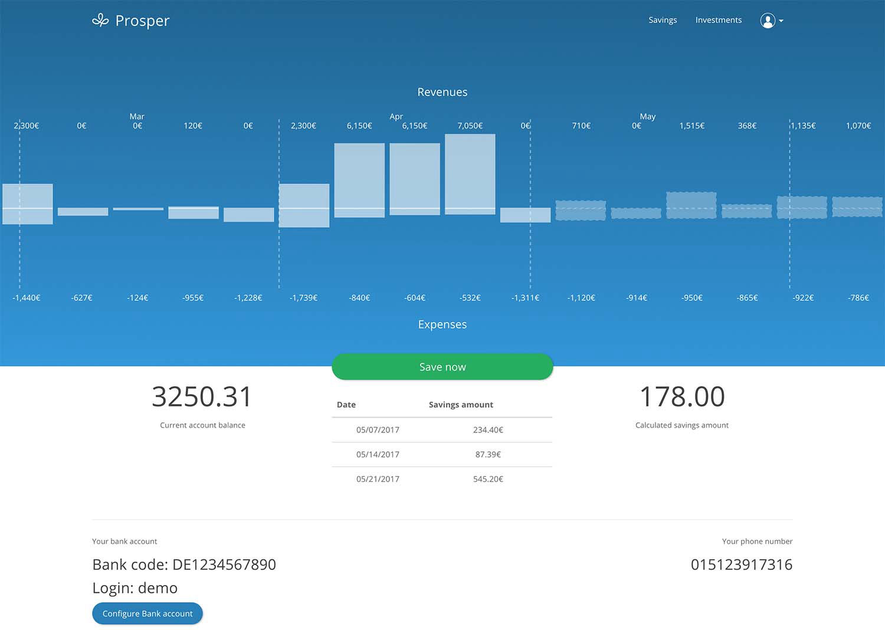
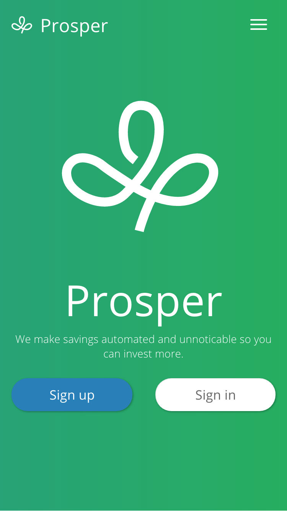
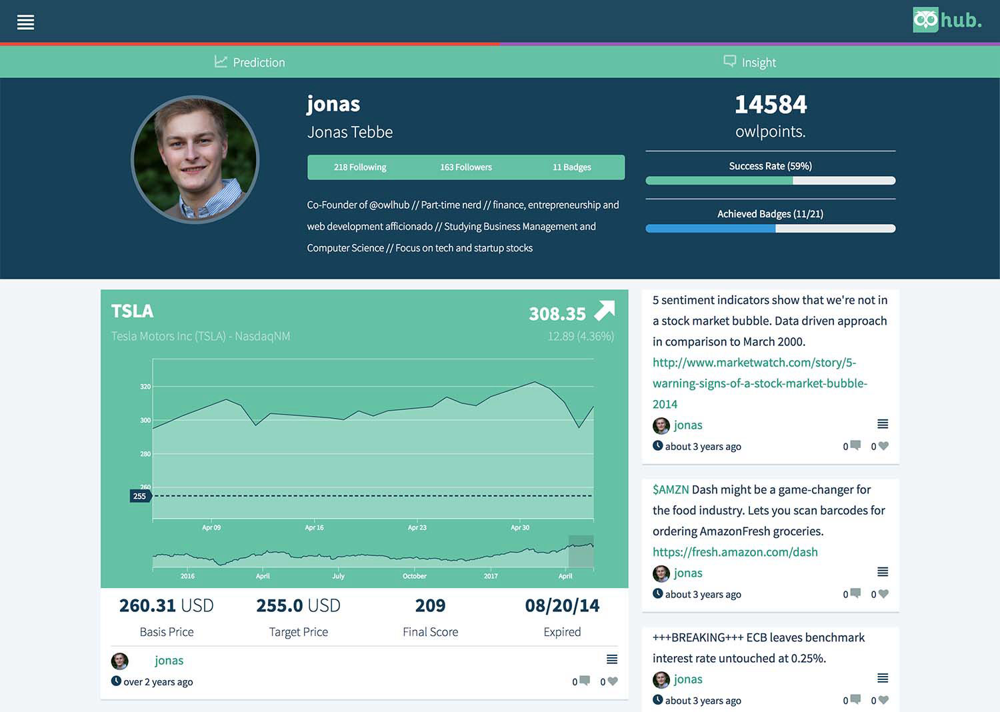
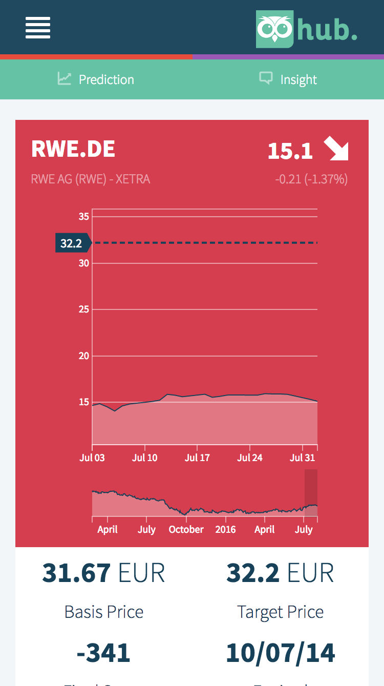
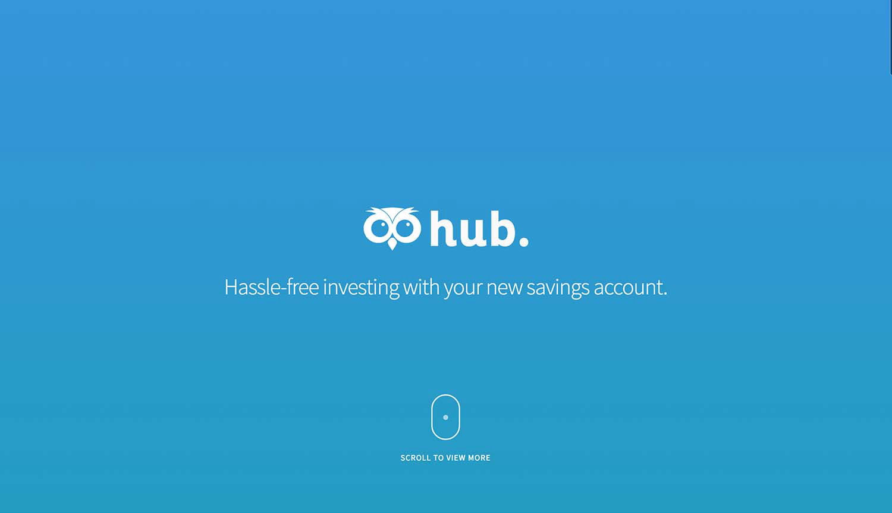
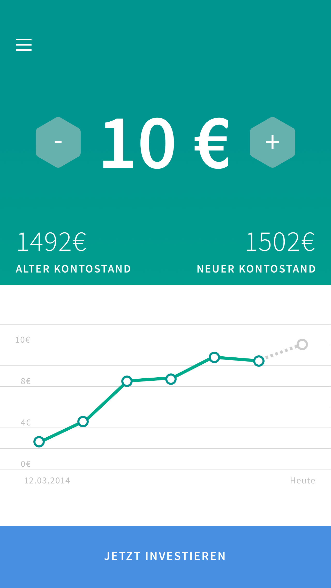
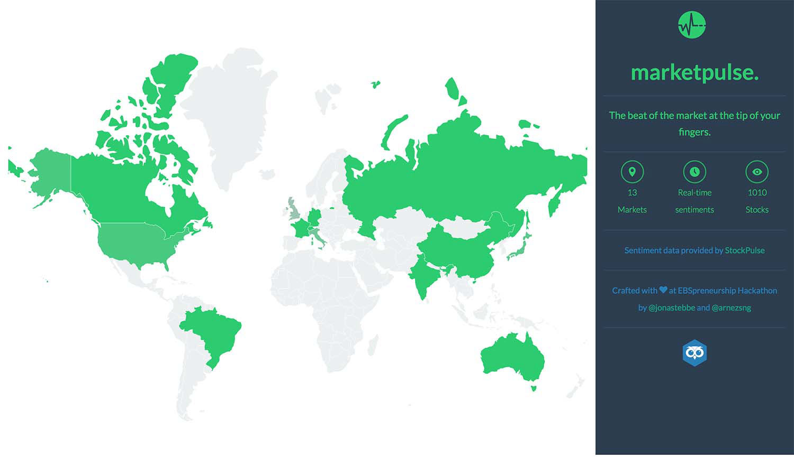
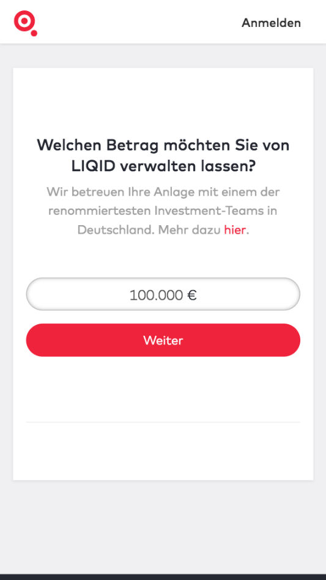
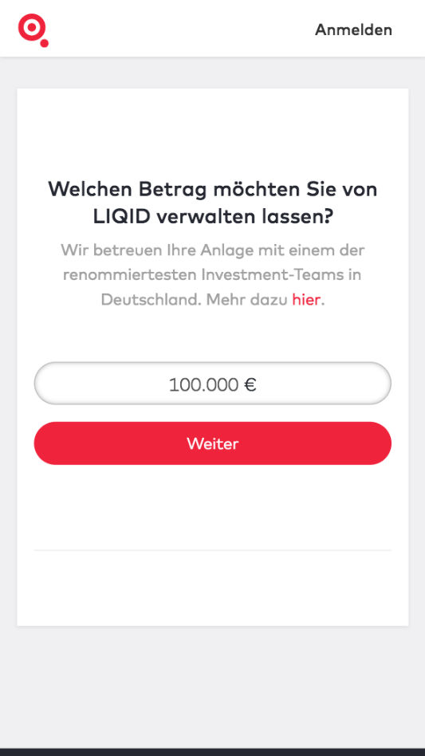

LIQID is a robo advisor that offers affluent investors in Germany a fully digital wealth management service. Only eight months after market launch, LIQID reached 100 million euro in assets under management and was named Germany’s best late stage FinTech startup. As of today, LIQID is among the four largest and most successful robo advisors in Europe. More »

Prosper
Connect your bank account and let us evaluate your financial situation. Experience how much money you can easily put aside and invest your savings to harvest a return. Prosper analyses historical bank account transactions with the ARIMA model and derives individual savings rates that do not hurt. All savings get invested into individual ETF portfolios that suit individual needs.

owlhub 1.0
Crowdsourcing insights and predictions to faciliate investments for everyone. Students, investors and traders become analysts to predict stock movements and share stock analyses to measure their skills and acquire profound knowledge fast and easily. More »

owlhub 2.0
As young professionals have lived through two crises already, they are extremely risk-averse and hold large positions in cash. We Germans are great savers but inflation eats up our savings. What young professionals need is a transparent, flexible and easy-to-use solution that makes investing easy as pie. owlhub. is the app that makes investing as hassle-free as your piggy bank. You decide week after week, how much you want to save and we invest your savings into an ETF portfolio that suits your needs. That way, you make your money work for you. More »

Marketpulse
It is hard to figure out what information is valuable and nobody has the time to watch Bloomberg 24/7. At the hackathon of the EBSpreneurship we decided to fix this problem. Marketpulse visualizes the StockPulse data and einriches the information with content from Twitter through the tame API and financial information from the Finance Base API. More »
 
